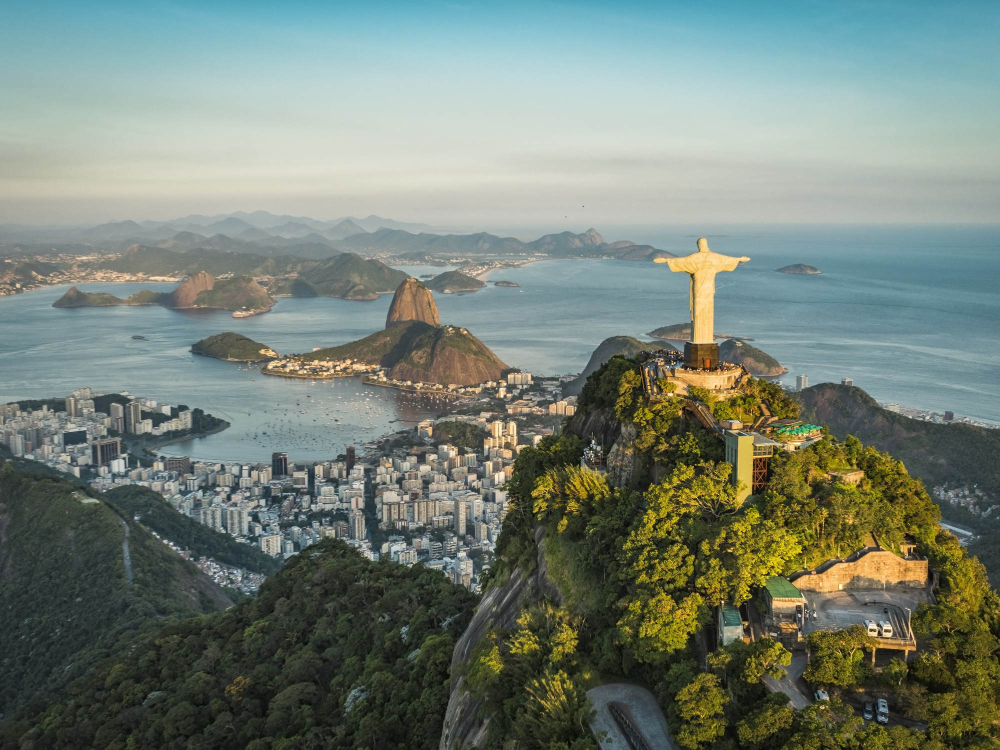

Yo viajé a Rio de Janeiro en 2021 y quedé fascinado por todo lo que ofrece. En mi opinión es una de las ciudades más lindas y alegres del mundo. En esta página invito a hacer un recorrido por las maravillas que forman parte de esta hermosa ciudad.
La Cidade Maravilhosa: Río de Janeiro

Inscripta en la lista del Patrimonio Mundial de la Unesco, Río de Janeiro es conocida internacionalmente como Ciudad Maravillosa (Cidade Maravilhosa, en portugués) con iconos culturales y paisajes como el Pan de Azúcar, la estatua del Cristo Redentor(una de las siete maravillas del mundo moderno, declarada Patrimonio Histórico y Artístico de Brasil), las playas de Copacabana e Ipanema, el Estadio de Maracaná, el parque nacional de Tijuca (el mayor bosque urbano del mundo),las fiestas de Fin de Año en Copacabana y la celebración del Carnaval. Entre sus atractivos culturales se encuentran el Museo de Arte Moderno, el Museo Nacional de Bellas Artes y el Teatro Municipal